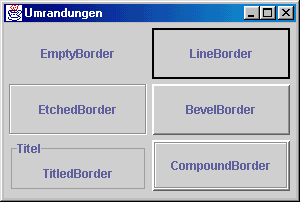
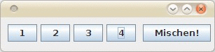

37.3 Weitere Swing-Container
37.3.1 JComponent
Viele der Swing-Komponenten sind direkt oder indirekt aus der Klasse
JComponent
abgeleitet. Sie stellt eine Reihe allgemeiner Hilfsmittel zur Verfügung,
die für daraus abgeleitete Komponentenklassen nützlich sind.
Als Ableitung von java.awt.Container
(und damit von java.awt.Component)
besitzt JComponent
bereits einen Großteil der Funktionalität von AWT-Komponenten.
Insbesondere bietet sie als Container
die Möglichkeit, andere Komponenten aufzunehmen, und sie kann
einen Layout-Manager besitzen, der für die Größe und
Anordnung der enthaltenen Komponenten zuständig ist.
Die mit dem AWT eingeführte grundsätzliche Unterscheidung
zwischen elementaren Dialogelementen und solchen, die Unterkomponenten
aufnehmen können, wurde mit der Einführung von Swing also
weitgehend fallengelassen. In der Praxis ist das jedoch nur selten
bedeutsam. Ein JButton
beispielsweise stellt sich im praktischen Gebrauch stets als elementare
Komponente dar - obwohl er als Konkretisierung von JComponent
auch Unterkomponenten enthalten könnte.
Umrandungen
JComponent
bietet die Möglichkeit, ihren Instanzen eine Umrandung zu geben.
Dazu gibt es die Methode setBorder,
mit der der Komponente ein Objekt des Typs Border
zugewiesen werden kann:
Border
ist ein Interface, zu dem es verschiedene Implementierungen gibt.
Die wichtigsten von ihnen zeigt folgende Tabelle:
Tabelle 37.4: Border-Implementierungen
Die Klassen besitzen sehr unterschiedliche Konstruktoren, mit denen
ihre jeweiligen Eigenschaften festgelegt werden. Obwohl die Border-Instanzen
einfach mit new
erzeugt werden könnten, bietet die Klasse BorderFactory
im Paket javax.swing
eine bessere Möglichkeit, dies zu tun. Zu jeder Art von Umrandung
steht nämlich eine Factory-Methode zur Verfügung (createEmptyBorder,
createLineBorder
usw.), mit der ein Border-Objekt
dieses Typs erzeugt werden kann. Wann immer möglich, versucht
die BorderFactory
dabei, Verweise auf bereits erzeugte Instanzen zurückzugeben.
Da Umrandungen in GUI-Programmen sehr häufig benötigt werden,
reduziert sich dadurch bei konsequenter Verwendung die Anzahl der
kurzlebigen Objekte und die Belastung des Garbage Collectors.
Abbildung 37.11 zeigt ein
Beispielprogramm, das sechs Labels mit unterschiedlichen Umrandungen
enthält:

Abbildung 37.11: Die wichtigsten Umrandungen
JComponent
bietet eine einfach anzuwendende Möglichkeit, Komponenten einen
Tooltip-Text zuzuweisen. Dieser wird angezeigt, wenn die Maus über
das Dialogelement bewegt und dort gehalten wird. Ein Tooltip gibt
dem unerfahrenen Anwender Informationen zur Bedeutung und Funktion
des ausgewählten Dialogelements. Tooltip-Texte werden mit der
Methode setToolTipText
zugewiesen; und mit getToolTipText
können sie abgefragt werden:
Bildschirmdarstellung der Komponente
Normalerweise braucht eine GUI-Anwendung sich um die konkrete Darstellung
ihrer Dialogelemente keine Gedanken zu machen. Die elementaren Komponenten
erledigen dies selbst und die zusammengesetzten Komponenten bedienen
sich ihrer Layoutmanager und der Ausgabemethoden der elementaren Komponenten.
Dies ändert sich, wenn eine eigene Komponente entwickelt werden
soll. Bei AWT-Anwendungen wurde diese aus Canvas
abgeleitet und in überlagerten Varianten von paint
oder update
wurde die nötige Bildschirmausgabe zur Verfügung gestellt.
In elementaren Swing-Komponenten, die aus JComponent
abgeleitet wurden, liegen die Dinge etwas komplizierter. Die Methode
paint
hat bereits in JComponent
eine recht aufwändige Implementierung und wird normalerweise
nicht mehr überlagert. Im Prinzip ruft sie nacheinander ihre
Methoden paintComponent,
paintBorder
und paintChildren
auf. Die letzten beiden sind für das Zeichnen der Umrandung und
der enthaltenen Dialogelemente zuständig und brauchen normalerweise
in eigenen Komponenten nicht überlagert zu werden. Für die
Darstellung der eigenen Komponente ist dagegen paintComponent
zuständig:
In JComponent
wird jeder Aufruf von paintComponent
an das ComponentUI
der Komponente delegiert. Instanzen dieser im Paket javax.swing.plaf
liegenden Klasse spielen in dem von jeder Swing-Komponente implementierten
Model-View-Controller-Konzept die Rolle des Views, sind also für
die grafische Darstellung der Komponente zuständig. Jede Swing-Komponente
besitzt ein ComponentUI,
das je nach Look-and-Feel unterschiedlich sein kann. Eine selbst definierte
Komponente muss also entweder für jedes unterstützte Look-and-Feel
ein passendes ComponentUI
zur Verfügung stellen oder die Bildschirmdarstellung durch Überlagern
von paintComponent
selbst erledigen.
Eine interessante Hilfe zum Testen eigener Komponenten kann durch
Aufruf der Methode setDebugGraphicsOptions
aktiviert werden:
Dadurch wird die Komponente mit Hilfe eines DebugGraphics-Objekts
gezeichnet. Es ist in der Lage, die verwendeten Grafikoperationen
auf der Konsole zu protokollieren oder zur besseren Kontrolle verzögert
auszugeben. Als Argument kann an setDebugGraphicsOptions
eine der folgenden Konstanten aus der Klasse DebugGraphics
übergeben werden:
| Konstante |
Bedeutung |
| NONE_OPTION |
Normale Ausgabe |
| LOG_OPTION |
Die Grafikoperationen werden auf der Console
protokolliert. |
| FLASH_OPTION |
Die Grafikoperationen erfolgen verzögert
und werden während der Ausgabe blinkend dargestellt. Bei dieser
Option muss die Doppelpufferung für die Komponente ausgeschaltet
werden. |
| BUFFERED_OPTION |
Gepufferte Ausgaben werden in einem separaten
Frame angezeigt. |
Tabelle 37.5: DebugGraphics-Konstanten
Das folgende Programm zeigt eine einfache Anwendung der Debug-Grafik
zur Darstellung eines Buttons. Mit Hilfe der statischen Methoden setFlashTime
und setFlashCount
der Klasse DebugGraphics
wird die Blinkrate und -dauer angepasst:
001 /* Listing3711.java */
002
003 import java.awt.*;
004 import javax.swing.*;
005
006 public class Listing3711
007 extends JFrame
008 {
009 public Listing3711()
010 {
011 super("Debug-Grafik");
012 addWindowListener(new WindowClosingAdapter(true));
013 Container cp = getContentPane();
014 DebugGraphics.setFlashTime(100);
015 DebugGraphics.setFlashCount(3);
016 JButton button = new JButton("DEBUG-Button");
017 RepaintManager repaintManager = RepaintManager.currentManager(button);
018 repaintManager.setDoubleBufferingEnabled(false);
019 button.setDebugGraphicsOptions(DebugGraphics.FLASH_OPTION);
020 cp.add(button);
021 }
022
023 public static void main(String[] args)
024 {
025 Listing3711 frame = new Listing3711();
026 frame.setLocation(100, 100);
027 frame.setSize(300, 200);
028 frame.setVisible(true);
029 }
030 }
|
Listing3711.java |
Listing 37.11: Debug-Grafik
Transparenter Hintergrund
Anders als im AWT, bei dem alle Dialogelemente einen undurchsichtigen
Hintergrund hatten, kann dieser bei Swing-Komponenten auch transparent
sein. Damit lassen sich runde Buttons, Beschriftungen mit durchscheinendem
Hintergrund oder ähnliche Effekte realisieren. Um den Hintergrund
einer Komponente transparent zu machen, ist
die Methode setOpaque
aufzurufen und false
zu übergeben. Standardmäßig ist der Hintergrund undurchsichtig.
Das folgende Programm besitzt zwei Buttons, von denen der eine einen
transparenten und der andere einen undurchsichtigen Hintergrund hat.
Um den Unterschied besser erkennen zu können, befinden sie sich
auf einer Komponente, die vollständig mit Gitterlinien bedeckt
ist.
001 /* Listing3712.java */
002
003 import java.awt.*;
004 import javax.swing.*;
005
006 public class Listing3712
007 extends JFrame
008 {
009 public Listing3712()
010 {
011 super("Transparenz");
012 addWindowListener(new WindowClosingAdapter(true));
013 Container cp = getContentPane();
014 //SimpleGridComponent erzeugen
015 SimpleGridComponent grid = new SimpleGridComponent();
016 grid.setLayout(new FlowLayout(FlowLayout.CENTER));
017 //Transparenten Button hinzufügen
018 JButton button = new JButton("Transparent");
019 button.setOpaque(false);
020 grid.add(button);
021 //Undurchsichtigen Button hinzufügen
022 button = new JButton("Opaque");
023 grid.add(button);
024 //SimpleGridComponent hinzufügen
025 cp.add(grid, BorderLayout.CENTER);
026 }
027
028 public static void main(String[] args)
029 {
030 try {
031 String plaf = "com.sun.java.swing.plaf.windows.WindowsLookAndFeel";
032 UIManager.setLookAndFeel(plaf);
033 Listing3712 frame = new Listing3712();
034 frame.setLocation(100, 100);
035 frame.setSize(300, 100);
036 frame.setVisible(true);
037 } catch (Exception e) {
038 e.printStackTrace();
039 System.exit(1);
040 }
041 }
042 }
043
044 class SimpleGridComponent
045 extends JComponent
046 {
047 protected void paintComponent(Graphics g)
048 {
049 int width = getSize().width;
050 int height = getSize().height;
051 g.setColor(Color.gray);
052 for (int i = 0; i < width; i += 10) {
053 g.drawLine(i, 0, i, height);
054 }
055 for (int i = 0; i < height; i += 10) {
056 g.drawLine(0, i, width, i);
057 }
058 }
059 }
|
Listing3712.java |
Listing 37.12: Ein transparenter Button
Die Ausgabe des Programms sieht so aus:

Abbildung 37.12: Ein Programm mit einem transparenten Button
Doppelpufferung
Um bei animierten Komponenten das Bildschirmflackern zu vermeiden,
kann die Technik des Doppelpufferns angewendet werden. Wir haben das
für AWT-Komponenten in Abschnitt 34.2.4
ausführlich erklärt. Swing-Komponenten, die aus JComponent
abgeleitet sind, können automatisch doppelgepuffert werden. Dazu
ist lediglich ein Aufruf von setDoubleBuffered
mit Übergabe von true
erforderlich. Mit isDoubleBuffered
kann der aktuelle Zustand dieser Eigenschaft abgefragt werden:
Größenvorgaben
Bereits in der Klasse Component
sind die Methoden getMinimumSize,
getPreferredSize
und getMaximumSize
definiert. Sie werden in abgeleiteten Klassen überlagert, um
dem Layoutmanager die minimale, optimale und maximale Größe
der Komponenten mitzuteilen (siehe z.B. Abschnitt 33.2.2).
In JComponent
gibt es zusätzlich die Methoden setMinimumSize,
setPreferredSize
und setMaximumSize.
Damit können die Größenvorgaben bestehender Komponenten
verändert werden, ohne eine neue Klasse daraus ableiten zu müssen.
Invalidierung/Validierung
Sowohl in Swing- als auch in AWT-Programmen kann der Aufbau eines
Dialogs geändert werden, wenn er bereits auf dem Bildschirm sichtbar
ist. Dialogelemente können hinzugefügt oder entfernt oder
in ihrem Aussehen geändert werden. Die dadurch implizierten Layoutänderungen
werden zwar oft, aber nicht immer automatisch erkannt und es kann
sein, dass die Bildschirmdarstellung die Änderungen nicht angemessen
wiedergibt.
Wird beispielsweise die Beschriftung oder der Font eines Swing-Buttons
verändert, so wird seine Größe den neuen Erfordernissen
angepasst und der Dialog neu aufgebaut. Bei AWT-Buttons ist das nicht
der Fall. Wenn sich der Platzbedarf für die Beschriftung ändert,
ist der Button nach der Änderung entweder zu klein oder zu groß.
Auch wenn neue Dialogelemente hinzugefügt werden, sind diese
weder im AWT noch in Swing unmittelbar sichtbar.
Um einem Container mitzuteilen, dass das Layout seiner Komponenten
komplett neu aufgebaut werden soll, ist dessen validate-Methode
aufzurufen:
Um einen unnötigen Neuaufbau des Bildschirms zu vermeiden, wird
validate
allerdings nur dann wirklich aktiv, wenn der Container, auf
dem der Aufruf erfolgte, zuvor mit invalidate
als ungültig deklariert wurde:
Wird invalidate
auf einer elementaren Komponente aufgerufen, die in einen Container
eingebettet ist, wird der Aufruf an den Container weitergegeben und
invalidiert auch diesen. Soll also nach der Änderung einer Komponente
der zugehörige Container neu dargestellt werden, ist auf der
Komponente invalidate
und anschließend auf dem Container validate
aufzurufen. In JComponent
gibt es zusätzlich die Methode revalidate,
die beide Schritte nacheinander durchführt.
Die Fokusreihenfolge
Innerhalb eines Dialogs kann immer nur eine Komponente zur Zeit den
Fokus haben, also Maus- und Tastaturereignisse erhalten. Durch Anklicken
mit der Maus kann dieser direkt einer bestimmten Komponente zugewiesen
werden. Alternativ kann (meist mit Hilfe der Tasten [TAB]
und [UMSCHALT]+[TAB])
der Fokus auch per Tastendruck verändert werden. Die Komponenten
eines Dialogs durchlaufen dabei einen Zyklus, der sich an der Einfüge-Reihenfolge
der Elemente orientiert. Das zuerst mit add
hinzugefügte Element enthält nach dem Aufrufen des Dialogs
den Fokus zuerst.
Mitunter ist es sinnvoll, lokale Fokuszyklen zu bilden, um Gruppen
von Komponenten zusammenzufassen und einfacher bedienen zu können.
Mit dem JDK 1.4 wurde das Fokus-Subsystem vollständig neu geschrieben.
Hauptziel dieser Änderung war es, eine große Zahl von existierenden
Fehlern zu beheben sowie ein wohldefiniertes und plattformunabhängiges
Fokusverhalten zu implementieren.
Für das Bilden von lokalen oder vom Standard abweichenden Fokuszyklen
gibt es die abstrakte Klasse FocusTraversalPolicy
im Paket java.awt.
Sie bietet folgende Schnittstellen:
public Component getComponentAfter(Container con, Component com)
public Component getComponentBefore(Container con, Component com)
public Component getFirstComponent(Container con)
public Component getLastComponent(Container con)
public Component getDefaultComponent(Container con)
|
java.awt.FocusTraversalPolicy |
Jede GUI-Komponente vom Typ Container
kann die Wurzel eines Fokuszyklus sein. Dazu ist die Methode setFocusCycleRoot
mit true als Parameter aufzurufen
und anschließend an der Methode setFocusTraversalPolicy
die konkrete FocusTraversalPolicy-Implementation
zu setzen.
Das JDK bringt eine Reihe von konkreten Implementationen der FocusTraversalPolicy
mit, zum Beispiel LayoutFocusTraversalPolicy,
die Default-Policy in Swing-Applikationen.
Das Listing 37.13
verdeutlicht die Anwendung eines eigenen Fokuszyklus. Auf einem Panel
liegen vier Buttons, deren Fokusreihenfolge jedes Mal per Zufallsgenerator
neu bestimmt wird, wenn der Button »Mischen!« gedrückt
wird.
Dazu repräsentiert die Liste buttons
die aktuelle Reihenfolge der Elemente. Bei jedem [TAB]-Tastendruck
wird der Index des Buttons in der Liste bestimmt, der den Fokus besitzt,
und der rechts davon liegende Button wird herausgegeben. Durch die
Verwendung des Modulo-Operators in der Methode getComponentAfter
geben wir den ersten Button aus der Liste zurück, wenn der aktuelle
Button der letzte in der definierten Reihenfolge ist. Dadurch ergibt
sich ein Zyklus. Die Methode getComponentBefore
ist analog implementiert. Zudem wurde die Methode getFirstComponent
und getLastComponent überschrieben.
Sie geben das erste Element bzw. das letzte Element in der Liste zurück.
getDefaultComponent
liefert ebenfalls das erste Element in der Liste und damit den gleichen
Button wie getFirstComponent.
Der Unterschied besteht darin, dass beim Eintritt in den Fokuszyklus
das Element den Fokus erhält, das durch getDefaultComponent
bestimmt wird. getFirstComponent
liefert dagegen das auf das letzte Element folgende.
001 /* Listing3713.java */
002
003 import java.awt.*;
004 import java.awt.event.*;
005 import java.util.*;
006 import java.util.List;
007 import javax.swing.*;
008
009 class ZufallFocusTraversalPolicy
010 extends FocusTraversalPolicy
011 {
012 private List<JButton> buttons;
013
014 ZufallFocusTraversalPolicy(List<JButton> buttons)
015 {
016 this.buttons = new ArrayList<JButton>(buttons);
017 mischen();
018 }
019
020 public Component getComponentAfter(Container con, Component com)
021 {
022 return buttons.get((buttons.indexOf(com)+1) % buttons.size());
023 }
024
025 public Component getComponentBefore(Container con, Component com)
026 {
027 int n = buttons.size();
028 return buttons.get((buttons.indexOf(com) + n-1) % n);
029 }
030
031 public Component getFirstComponent(Container con)
032 {
033 return buttons.get(0);
034 }
035
036 public Component getLastComponent(Container con)
037 {
038 return buttons.get(buttons.size()-1);
039 }
040
041 public Component getDefaultComponent(Container con)
042 {
043 return getFirstComponent(con);
044 }
045
046 public void mischen()
047 {
048 Collections.shuffle(buttons);
049 System.err.print("Fokusreihenfolge: ");
050 for (JButton button : buttons) {
051 System.err.print(button.getText() + " ");
052 }
053 System.err.println();
054 }
055 }
056
057 public class Listing3713
058 extends JFrame
059 {
060 Listing3713()
061 {
062 setLayout(new FlowLayout());
063
064 JPanel panel = new JPanel();
065 List<JButton> buttons = new ArrayList<JButton>();
066 for (int i = 1; i <= 4; i++) {
067 JButton button = new JButton(Integer.toString(i));
068 panel.add(button);
069 buttons.add(button);
070 }
071
072 final ZufallFocusTraversalPolicy policy =
073 new ZufallFocusTraversalPolicy(buttons);
074 panel.setFocusCycleRoot(true);
075 panel.setFocusTraversalPolicy(policy);
076
077 JButton mischen = new JButton("Mischen!");
078 mischen.addActionListener(new ActionListener()
079 {
080 public void actionPerformed(ActionEvent e)
081 {
082 policy.mischen();
083 }
084 });
085
086 add(panel);
087 add(mischen);
088 pack();
089 }
090
091 public static void main(String[] args)
092 {
093 Listing3713 frame = new Listing3713();
094 frame.setDefaultCloseOperation(JFrame.EXIT_ON_CLOSE);
095 frame.setVisible(true);
096 }
097 }
|
Listing3713.java |
Listing 37.13: FocusTraversalPolicy
Die Ausgabe des Programms ist zum Beispiel:
Fokusreihenfolge: 2 4 1 3
Fokusreihenfolge: 3 2 1 4
Fokusreihenfolge: 2 1 3 4

Abbildung 37.13: Buttonpanel mit eigener FocusTraversalPolicy
Registrieren von Tastaturkommandos
Als letzte Eigenschaft der Klasse JComponent
wollen wir uns das Registrieren von Tastaturkommandos ansehen. Dabei
wird eine bestimmte Tastenkombination bei einer Komponente angemeldet
und löst bei jeder Anwendung ein Action-Event aus. Tastaturkommandos
können sowohl bei elementaren Komponenten als auch bei Containern
angemeldet werden, und es gibt verschiedene Möglichkeiten, sie
vom Fokus der Komponente abhängig zu machen. Das Registrieren
erfolgt mit der Methode registerKeyboardAction:
public void registerKeyboardAction(
ActionListener anAction,
String aCommand,
KeyStroke aKeyStroke,
int aCondition
)
|
javax.swing.JComponent |
Deren erstes Argument ist der ActionListener,
der im Fall des Tastendrucks (mit dem Kommando aCommand)
aufgerufen werden soll. aKeyStroke
definiert die zu registrierende Tastenkombination (wie man KeyStroke-Objekte
erzeugt, wurde in Listing 37.8
gezeigt). Das letzte Argument gibt an, in welcher Relation der Fokus
zur Komponente stehen muss, damit das Kommando aktiv wird. Er kann
einen der folgenden Werte annehmen:
| Konstante |
Bedeutung |
| WHEN_FOCUSED |
Das Tastaturkommando wird nur ausgelöst,
wenn die Komponente den Fokus hat. |
| WHEN_IN_FOCUSED_WINDOW |
Das Tastaturkommando wird ausgelöst,
wenn die Komponente den Fokus hat oder wenn sie zu einem Container
gehört, der gerade den Fokus hat. |
| WHEN_ANCESTOR_OF_FOCUSED_COMPONENT |
Das Tastaturkommando wird ausgelöst,
wenn die Komponente oder eines der darin enthaltenen Elemente den
Fokus hat. |
Tabelle 37.6: Bedingungen zur Registrierung von Tastaturkommandos
Bei der Verwendung der zweiten und dritten Variante werden die Tastendrücke
immer dann ausgeführt, wenn der Container selbst oder eine der
darin enthaltenen Komponenten den Fokus hat. Der Unterschied besteht
in der Sichtweise. WHEN_IN_FOCUSED_WINDOW
wird auf die elementaren Komponenten angewendet, während WHEN_ANCESTOR_OF_FOCUSED_COMPONENT
für den Container selbst vorgesehen ist.
Das folgende Programm zeigt eine beispielhafte Anwendung für
das Registrieren von Tastaturkommandos:
001 /* Listing3714.java */
002
003 import java.awt.*;
004 import java.awt.event.*;
005 import javax.swing.*;
006 import javax.swing.border.*;
007
008 public class Listing3714
009 extends JFrame
010 implements ActionListener
011 {
012 public Listing3714()
013 {
014 super("Invalidierung");
015 addWindowListener(new WindowClosingAdapter(true));
016 Container cp = getContentPane();
017 ((JComponent)cp).setBorder(new EmptyBorder(5, 5, 5, 5));
018 cp.setLayout(new FlowLayout());
019 //Textfelder erzeugen
020 JTextField tf1 = new JTextField("Zeile1", 20);
021 JTextField tf2 = new JTextField("Zeile2", 20);
022 JTextField tf3 = new JTextField("Zeile3", 20);
023 //STRG+UMSCHALT+F6 auf Frame registrieren
024 ((JComponent)cp).registerKeyboardAction(
025 this,
026 "dialog",
027 ctrlShift(KeyEvent.VK_F6),
028 JComponent.WHEN_ANCESTOR_OF_FOCUSED_COMPONENT
029 );
030 //STRG+UMSCHALT+F7 auf tf1 registrieren
031 tf1.registerKeyboardAction(
032 this,
033 "tf1",
034 ctrlShift(KeyEvent.VK_F7),
035 JComponent.WHEN_IN_FOCUSED_WINDOW
036 );
037 //STRG+UMSCHALT+F8 auf tf2 registrieren
038 tf2.registerKeyboardAction(
039 this,
040 "tf2",
041 ctrlShift(KeyEvent.VK_F8),
042 JComponent.WHEN_FOCUSED
043 );
044 //Textfelder hinzufügen
045 cp.add(tf1);
046 cp.add(tf2);
047 cp.add(tf3);
048 }
049
050 public void actionPerformed(ActionEvent event)
051 {
052 String cmd = event.getActionCommand();
053 System.out.println(cmd);
054 }
055
056 private KeyStroke ctrlShift(int vkey)
057 {
058 return KeyStroke.getKeyStroke(
059 vkey,
060 Event.SHIFT_MASK + Event.CTRL_MASK
061 );
062 }
063
064 public static void main(String[] args)
065 {
066 Listing3714 frame = new Listing3714();
067 frame.setLocation(100, 100);
068 frame.setSize(300, 200);
069 frame.setVisible(true);
070 }
071 }
|
Listing3714.java |
Listing 37.14: Registrieren von Tastaturkommandos
Das Hauptfenster selbst registriert die Tastenkombination [STRG]+[UMSCHALT]+[F6].
Sie funktioniert unabhängig davon, welches der drei Textfelder
den Fokus hat. Das oberste Textfeld registriert [STRG]+[UMSCHALT]+[F7]
mit der Bedingung WHEN_IN_FOCUSED_WINDOW.
Die Tastenkombination steht in diesem Dialog also ebenfalls immer
zur Verfügung. Das nächste Textfeld registriert [STRG]+[UMSCHALT]+[F8],
lässt sie allerdings nur zu, wenn es selbst den Fokus hat.
37.3.2 JPanel und JLayeredPane
JPanel
JPanel
ist die Basisklasse für GUI-Container in Swing, die nicht Hauptfenster
sind. Sie ist direkt aus JComponent
abgeleitet und fügt dieser nur wenig hinzu. Wichtigstes Unterscheidungsmerkmal
ist die Tatsache, dass einem JPanel
standardmäßig ein FlowLayout
als Layoutmanager zugeordnet ist. Instanzen von JComponent
besitzen dagegen zunächst keinen Layoutmanager. JPanel
definiert die folgenden Konstruktoren:
public JPanel()
public JPanel(boolean isDoubleBuffered)
public JPanel(LayoutManager layout)
public JPanel(LayoutManager layout, boolean isDoubleBuffered)
|
javax.swing.JPanel |
Der parameterlose Konstruktor erzeugt ein JPanel
mit Doppelpufferung und einem FlowLayout.
Wahlweise können beide Eigenschaften durch Setzen der Argumente
isDoubleBuffered und layout
geändert werden. In der weiteren Anwendung ist JPanel
mit JComponent
identisch.
JLayeredPane
Eine weitere Container-Klasse, die direkt aus JComponent
abgeleitet wurde, ist JLayeredPane.
Sie fügt den Dialogen eine dritte Dimension hinzu und ermöglicht
mit Hilfe eines Layerkonzepts die kontrollierte Anordnung von Komponenten
übereinander. JLayeredPane
ist Vaterklasse von JDesktopPane
(siehe Abschnitt 37.1.6)
und wichtiger Bestandteil der Struktur von Hauptfenstern (siehe Abschnitt 37.1.1).
In der praktischen Anwendung wird sie nur selten direkt gebraucht
und wir wollen nicht weiter darauf eingehen.